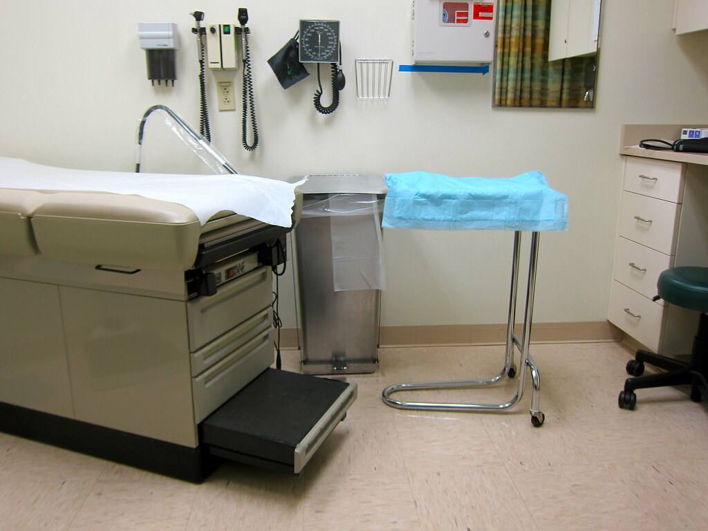

IEC apoya a organizaciones médicas y dentales con estrategia de crecimiento no clínica, desarrollo de MSO, coordinación operativa, expansión de mercado y soluciones de conserjería en salud.

El trabajo de IEC en salud se concentra en cuatro disciplinas — cada una es un área de práctica sustantiva, no una etiqueta.
Estrategia de crecimiento para organizaciones médicas y dentales que mantiene la toma de decisiones clínicas en manos de proveedores con licencia. Planificación de líneas de servicio, análisis de capacidad, desarrollo de redes de referencia y posicionamiento en el mercado — organizados para que los operadores puedan crecer sin comprometer la atención.
Diseño de estructuras de servicios de gestión que separan las operaciones comerciales de la atención clínica. Planificación organizacional, alcance de los servicios administrativos, modelos de personal y coordinación de proveedores — desarrollados junto con profesionales independientes en materia legal y de cumplimiento.
Modelos operativos no clínicos repetibles para una expansión controlada: criterios de ubicación, secuencia de lanzamiento, plantillas de personal, manuales de referencia e hitos de desempeño que hacen que cada nueva sede sea más fácil que la anterior.
Rutas prácticas para la tecnología en salud — desde el diseño de pilotos y la integración en los flujos de trabajo hasta la vinculación institucional y el desarrollo de mercado. Estrategia comercial no clínica para plataformas seguras y revisadas por personas que se ajustan a las operaciones reales.
La expansión en salud es más que abrir otra sede. Requiere la estructura, las personas, los sistemas, las relaciones de referencia, los bienes raíces y la disciplina financiera adecuados. IEC coordina estos elementos en movimiento, mientras que la toma de decisiones clínicas permanece en manos de proveedores con licencia.
Trabajamos con médicos, dentistas, operadores, inversionistas y socios estratégicos en la intersección entre la prestación de servicios de salud y el crecimiento empresarial.
Evaluación de mercado, planificación de ubicaciones, desarrollo de líneas de servicio y hojas de ruta de crecimiento por fases.
Flujos de trabajo no clínicos, modelos de personal, coordinación de proveedores y planificación del desempeño.
Construcción de relaciones con proveedores, instituciones, empleadores y actores comunitarios.
Criterios de sitio, coordinación de propiedades y alineación entre el uso clínico y los objetivos comerciales.
Narrativas de servicio claras, vinculación institucional y campañas prácticas de desarrollo comercial.
Indicadores clave de desempeño (KPI), hitos de implementación y estructuras de rendición de cuentas que respaldan una ejecución disciplinada.
IEC ayuda a diseñar estructuras de servicios de gestión que permiten a los proveedores con licencia mantener la responsabilidad de la atención al paciente, mientras que una organización no clínica respalda las funciones comerciales.


El crecimiento se ve diferente para una práctica nueva, un grupo establecido y una organización dental que evalúa su próximo capítulo. IEC adapta el compromiso a la etapa del ciclo de vida — y coordina en conjunto las decisiones relacionadas con bienes raíces, personal y tecnología, ya que rara vez pueden separarse.
Definir el modelo de servicio, el mercado objetivo, los requisitos de espacio, las necesidades de personal y la secuencia de lanzamiento.
Evaluar la capacidad, las oportunidades de ingresos, los cuellos de botella operativos y las rutas prácticas de expansión.
Coordinar una evaluación financiera y operativa confidencial, que incluye fondo de comercio, SDE, EBITDA, potencial de crecimiento y bienes raíces relacionados.
Crear un modelo operativo no clínico repetible para una expansión regional o nacional controlada.
IEC brinda coordinación no clínica a personas, familias y visitantes internacionales que necesitan ayuda para navegar el acceso a la atención médica y la logística relacionada.
Clarificar la propuesta de valor, los segmentos prioritarios de clientes, las necesidades de evidencia y la ruta práctica hacia la adopción.
Desarrollar la vinculación con organizaciones de salud, hotelería, transporte, gobierno e industria.
Identificar y coordinar agentes, distribuidores y socios de canal calificados.
Adaptar el posicionamiento y la estrategia de socios para Estados Unidos, el CCG, Medio Oriente, el norte de África y otros mercados prioritarios.
IEC puede apoyar un área de trabajo específica o coordinar un programa más amplio de crecimiento no clínico, con un alcance definido según la preparación, los recursos y el entorno regulatorio de la organización.
Modelo de servicio, definición de mercado, criterios de sitio, supuestos de personal, necesidades de proveedores y hoja de ruta de apertura.
Revisión de flujos de trabajo, cuellos de botella administrativos, coordinación del acceso de pacientes, indicadores de desempeño y rendición de cuentas.
Nuevas ubicaciones, líneas de servicio, relaciones con médicos, canales de empleadores y estándares operativos multisede.
Posicionamiento de tecnología en salud, pilotos institucionales, relaciones de distribución y planificación del desarrollo de mercado.
Comprender la organización actual, los objetivos y las limitaciones.
Desarrollar la estructura, las prioridades de crecimiento y el plan de implementación.
Alinear a las partes interesadas, los proveedores, las ubicaciones y los asesores profesionales.
Hacer seguimiento de los hitos, resolver obstáculos y mantener el impulso.